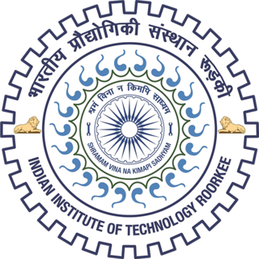
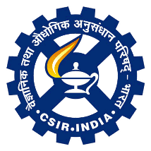
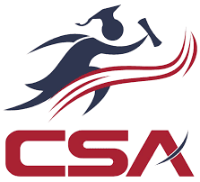
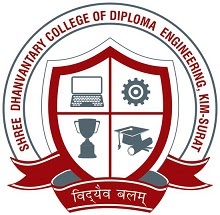
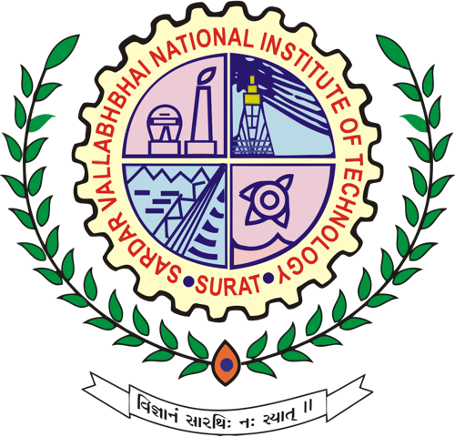

Research fellowships, teaching assistantships, and faculty positions across hydrology and civil engineering.




During Ph.D. Assistantship (July 2021 – June 2025) — conducting tutorial classes and teaching assistance for B.Tech. and M.Tech. courses.
Course Teaching (December 2019 – January 2021).

During M.Tech. Assistantship (June 2018 – May 2019) — conducting practical (laboratory) and tutorial classes for B.Tech. courses.
Course Teaching (February 2017 – June 2017).